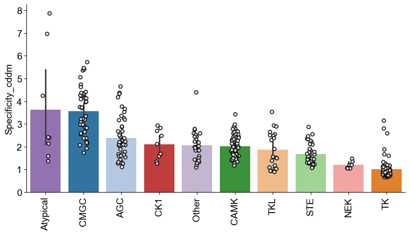

import pandas as pd
from katlas.data import *
from katlas.plot import *Specificity comparison
pssms= pd.read_parquet('out/CDDM_pssms.parquet')pssms.index = pssms.index.str.split('_').str[1]spec = pssms.apply(get_specificity_flat , axis=1)specindex
SRC 0.663547
EPHA3 0.911340
FES 0.766754
NTRK3 0.720888
ALK 0.795550
...
SMMLCK 2.784532
ROR1 2.815438
BRAF 2.292233
GAK 4.387741
MAST2 2.504381
Length: 329, dtype: float64info = Data.get_kinase_info()
info = info[info.pseudo=='0'].copy()
hue_group = info.set_index('kinase')['modi_group']df = pd.DataFrame(spec,columns=['specificity_cddm'])df['group'] = df.index.map(hue_group)df=df.reset_index(names='kinase_id')df| kinase_id | specificity_cddm | group | |
|---|---|---|---|
| 0 | SRC | 0.663547 | TK |
| 1 | EPHA3 | 0.911340 | TK |
| 2 | FES | 0.766754 | TK |
| 3 | NTRK3 | 0.720888 | TK |
| 4 | ALK | 0.795550 | TK |
| ... | ... | ... | ... |
| 324 | SMMLCK | 2.784532 | CAMK |
| 325 | ROR1 | 2.815438 | TK |
| 326 | BRAF | 2.292233 | TKL |
| 327 | GAK | 4.387741 | Other |
| 328 | MAST2 | 2.504381 | AGC |
329 rows × 3 columns
plot_bar(df,value='specificity_cddm',group='group',palette=group_color,figsize=(10,5))
save_svg('fig/cddm_specificity.svg')
# plot_rank(df.sort_values('specificity_cddm'),x='kinase_id',y='specificity_cddm',hue='group',palette=group_color)
PSPA
pspa = Data.get_pspa_all_scale()spec = pspa.apply(get_specificity_flat , axis=1)df2 = pd.DataFrame(spec,columns=['specificity_pspa'])df2['group'] = df2.index.map(hue_group)df2 = df2.reset_index(names=['kinase_id'])df2| kinase_id | specificity_pspa | group | |
|---|---|---|---|
| 0 | AAK1 | 4.776913 | Other |
| 1 | ACVR2A | 1.398751 | TKL |
| 2 | ACVR2B | 1.213098 | TKL |
| 3 | AKT1 | 2.981665 | AGC |
| 4 | AKT2 | 3.363335 | AGC |
| ... | ... | ... | ... |
| 391 | KDR | 0.752196 | TK |
| 392 | FLT4 | 0.755710 | TK |
| 393 | WEE1_TYR | 0.887054 | NaN |
| 394 | YES1 | 0.507455 | TK |
| 395 | ZAP70 | 2.218516 | TK |
396 rows × 3 columns
plot_bar(df2,value='specificity_pspa',group='group',palette=group_color,figsize=(10,5))
save_svg('fig/pspa_specificity.svg')
Combine
df_comb = df.merge(df2,on='kinase_id')df_comb['group'] = df_comb.kinase_id.map(hue_group)df_comb| kinase_id | specificity_cddm | group_x | specificity_pspa | group_y | group | |
|---|---|---|---|---|---|---|
| 0 | SRC | 0.663547 | TK | 0.942494 | TK | TK |
| 1 | EPHA3 | 0.911340 | TK | 0.952877 | TK | TK |
| 2 | FES | 0.766754 | TK | 1.569350 | TK | TK |
| 3 | NTRK3 | 0.720888 | TK | 1.074483 | TK | TK |
| 4 | ALK | 0.795550 | TK | 0.875102 | TK | TK |
| ... | ... | ... | ... | ... | ... | ... |
| 307 | CDC7 | 2.791146 | Other | 0.978796 | Other | Other |
| 308 | CDK12 | 5.479276 | CMGC | 4.386190 | CMGC | CMGC |
| 309 | SMMLCK | 2.784532 | CAMK | 1.057586 | CAMK | CAMK |
| 310 | BRAF | 2.292233 | TKL | 0.467151 | TKL | TKL |
| 311 | GAK | 4.387741 | Other | 0.835448 | Other | Other |
312 rows × 6 columns
df_comb=df_comb.set_index('kinase_id')idx1 = df_comb.specificity_cddm.sort_values(ascending=False).head(20).indexidx2 = df_comb.specificity_pspa.sort_values(ascending=False).head(20).indexidxs = set(idx1)|set(idx2)plot_corr(df_comb,
y='specificity_cddm',
x='specificity_pspa',
index_list = idxs,
text_location=(0.8,0.9),
hue='group',
palette=group_color,
)
plt.xlabel('PSPA specificity score')
plt.ylabel('CDDM specificity score')
save_svg('fig/specificity.svg')